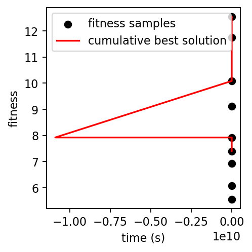

Run the GP optimizer in four dimensions¶
[1]:
%run -i ../../../examples/prepare_gp_optimizer.py
dofs = [kbv.x_rot, kbv.offz, kbh.x_rot, kbh.offz]
hard_bounds = np.array([[-0.10, +0.10], [-0.50, +0.50], [-0.10, +0.10], [-0.50, +0.50]])
for dof in dofs:
dof.kind = "hinted"
[2]:
gpo = Optimizer(
init_scheme='quasi-random',
n_init=16,
run_engine=RE,
db=db,
detector=w9,
detector_type='image',
dofs=dofs,
dof_bounds=hard_bounds,
fitness_model='max_sep_density',
training_iter=100,
verbose=True,
)
learning with strategy "quasi-random" ...
getshonecol: no GOOD rays, returning empty array
getshonecol: no GOOD rays, returning empty array
getshonecol: no GOOD rays, returning empty array
getshonecol: no GOOD rays, returning empty array
getshonecol: no GOOD rays, returning empty array
getshonecol: no GOOD rays, returning empty array
getshonecol: no GOOD rays, returning empty array
getshonecol: no GOOD rays, returning empty array
getshonecol: no GOOD rays, returning empty array
getshonecol: no GOOD rays, returning empty array
getshonecol: no GOOD rays, returning empty array
getshonecol: no GOOD rays, returning empty array
kbv_x_rot kbv_offz kbh_x_rot kbh_offz fitness
0 0.049173 0.033861 -0.063106 -0.002693 6.850121
1 -0.050827 -0.410583 0.040894 0.425878 7.423845
2 0.099173 0.256083 0.080894 -0.329224 NaN
3 -0.000827 -0.077250 0.000894 -0.472081 12.283869
4 0.024173 -0.188361 -0.039106 -0.186367 7.696738
5 -0.075827 0.478306 -0.079106 0.099348 6.121496
6 0.074173 0.144972 0.048894 0.242205 6.771411
7 -0.025827 -0.336509 0.088894 -0.043510 5.861907
8 0.036673 0.330157 0.008894 0.385062 9.878487
9 -0.063327 -0.003176 -0.031106 -0.247591 8.215944
10 0.086673 -0.447620 -0.071106 -0.390448 NaN
11 -0.013327 0.219046 0.032894 -0.104734 7.860700
12 0.011673 -0.114287 0.072894 0.180980 6.070416
13 -0.088327 -0.225398 -0.007106 0.323837 10.721223
14 0.061673 0.441268 -0.047106 0.038123 NaN
15 -0.038327 0.107935 -0.087106 0.466694 7.153045
With four dimensions, we can no longer plot the parameter space in a satisfying way as we might be able to in two dimensions. We also have a lot more hyperparameters to deal with, and comparatively fewer points per dimension with which to infer them. One way to evaluate the state of the hyperparameters is with the Fisher information matrix, which encodes the covariance of their estimates with respect to the likelihood:
[3]:
FM = gpo._contingent_fisher_information_matrix(gpo.test_params[0])[0]
plt.imshow(np.abs(FM), norm=mpl.colors.LogNorm())
plt.colorbar()
[3]:
<matplotlib.colorbar.Colorbar at 0x7fec7a61ec20>

In particular, we can use the information matrix to sample points which will tell us the most about the hyperparameters:
[4]:
gpo.learn(n_iter=1, n_per_iter=1, strategy='A-optimal', greedy=True, reuse_hypers=False)
gpo.learn(n_iter=1, n_per_iter=1, strategy='D-optimal', greedy=True, reuse_hypers=False)
learning with strategy "A-optimal" ...
getshonecol: no GOOD rays, returning empty array
getshonecol: no GOOD rays, returning empty array
getshonecol: no GOOD rays, returning empty array
getshonecol: no GOOD rays, returning empty array
getshonecol: no GOOD rays, returning empty array
getshonecol: no GOOD rays, returning empty array
getshonecol: no GOOD rays, returning empty array
getshonecol: no GOOD rays, returning empty array
getshonecol: no GOOD rays, returning empty array
getshonecol: no GOOD rays, returning empty array
getshonecol: no GOOD rays, returning empty array
getshonecol: no GOOD rays, returning empty array
kbv_x_rot kbv_offz kbh_x_rot kbh_offz fitness
16 0.090177 0.485807 -0.053862 -0.057836 NaN
learning with strategy "D-optimal" ...
kbv_x_rot kbv_offz kbh_x_rot kbh_offz fitness
17 0.002598 0.297873 0.029445 -0.057602 8.012808
[5]:
gpo.plot_fitness()
